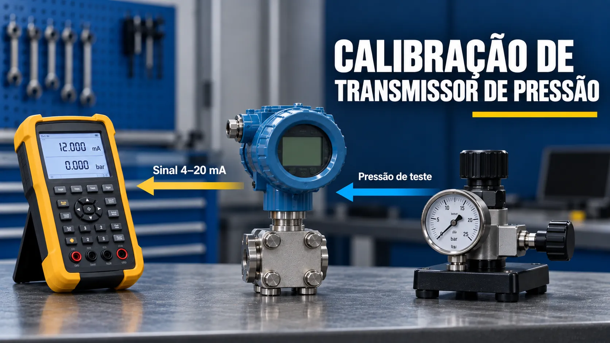

Calibração de Transmissor de Pressão
Conteúdo técnico: ALOGY Engenharia · Atualizado em: 11/09/2026

Calibrar um transmissor de pressão significa comparar a pressão aplicada por um padrão adequado com a saída indicada pelo instrumento — normalmente 4–20 mA — em pontos definidos da faixa. A verificação deve separar o erro do padrão, o erro do transmissor e eventuais problemas da malha.
O que está sendo verificado
O teste mais simples verifica o conjunto sensor eletrônico/saída do transmissor. Um loop calibration completo pode incluir alimentação, cabeamento, cartão analógico, escala no PLC/CLP ou DCS e indicação no supervisório. Registrar a fronteira do teste evita declarar que toda a malha foi aprovada quando apenas o transmissor foi conferido.
Antes de iniciar, identifique se a pressão é manométrica, absoluta ou diferencial. Confirme também LRV, URV, unidade configurada, damping e função de transferência. Em transmissores DP usados para vazão, verifique onde a extração de raiz quadrada está sendo executada.
As-found e as-left
Registre a condição as-found antes de qualquer ajuste. Se o procedimento permitir correção, documente o que foi alterado e repita os pontos para registrar a condição as-left. Essa separação é importante para histórico de deriva e avaliação de desempenho.
Dados e condições antes de aplicar pressão
- Identificação: TAG, fabricante, modelo, número de série e serviço.
- Configuração: LRV, URV, unidade, saída linear e alimentação da malha.
- Padrão: faixa compatível, certificado vigente e incerteza adequada ao critério adotado.
- Conexão: mangueiras, adaptadores e manifold compatíveis, estanques e limpos.
- Segurança: processo isolado e despressurizado conforme procedimento, sem atuação indevida de intertravamentos.
Pontos 0%, 25%, 50%, 75% e 100%
Um roteiro comum usa 0%, 25%, 50%, 75% e 100% do span em subida e depois em descida, desde que o procedimento aplicável defina esses pontos. Para saída linear 4–20 mA, a corrente esperada é:
0% = 4 mA · 25% = 8 mA · 50% = 12 mA · 75% = 16 mA · 100% = 20 mA.
Quando o critério é expresso em percentual do span, use o módulo de URV − LRV no denominador. Não confunda percentual da leitura com percentual do span.
Erros comuns de campo
- Não eliminar vazamentos ou bolhas no conjunto de teste.
- Aplicar sobrepressão durante a aproximação do ponto.
- Zerar o instrumento sem conferir posição de montagem e condição física adequada.
- Ajustar zero e span antes de registrar o as-found.
- Avaliar somente a corrente e ignorar a leitura digital/HART ou a escala no sistema de controle.
- Usar padrão cuja faixa ou incerteza não sustenta o critério de aceitação.
Exemplo prático
Considere um transmissor configurado de 0 a 10 bar. Ao aplicar 5 bar, a saída linear esperada é 12 mA. Se a corrente medida for 12,08 mA, a diferença de saída é +0,08 mA. Convertida para a faixa de engenharia, essa diferença equivale a +0,05 bar, ou +0,5% do span.
Esse valor só pode ser classificado como conforme ou não conforme quando comparado ao erro máximo permitido e à regra de decisão definidos no procedimento. O cálculo isolado não substitui a avaliação de incerteza, estabilidade e repetibilidade.
Checklist rápido antes de decidir
- Os pontos de subida e descida foram registrados antes de qualquer ajuste?
- A unidade, LRV e URV coincidem com a folha de dados e o sistema de controle?
- O zero foi verificado na condição física correta?
- Pressão aplicada, corrente esperada e corrente medida estão registradas separadamente?
- As-found e as-left estão documentados?
Ferramentas relacionadas
- Calibração de transmissor DP de vazão
- Calibração de transmissor de nível DP
- Calibração de transmissor de temperatura
- Calibração de conversor I/P e P/I
Referências para aprofundamento
- Fluke 721 — medição de pressão, 4–20 mA e alimentação de malha.
- BIPM/JCGM — Vocabulário Internacional de Metrologia (VIM).
Aviso técnico
Este conteúdo é educativo e serve para apoio técnico. Em aplicações críticas, alterações permanentes ou emissão de certificados, valide o método com procedimento, documentação do fabricante, padrões rastreáveis, incerteza e profissional responsável.